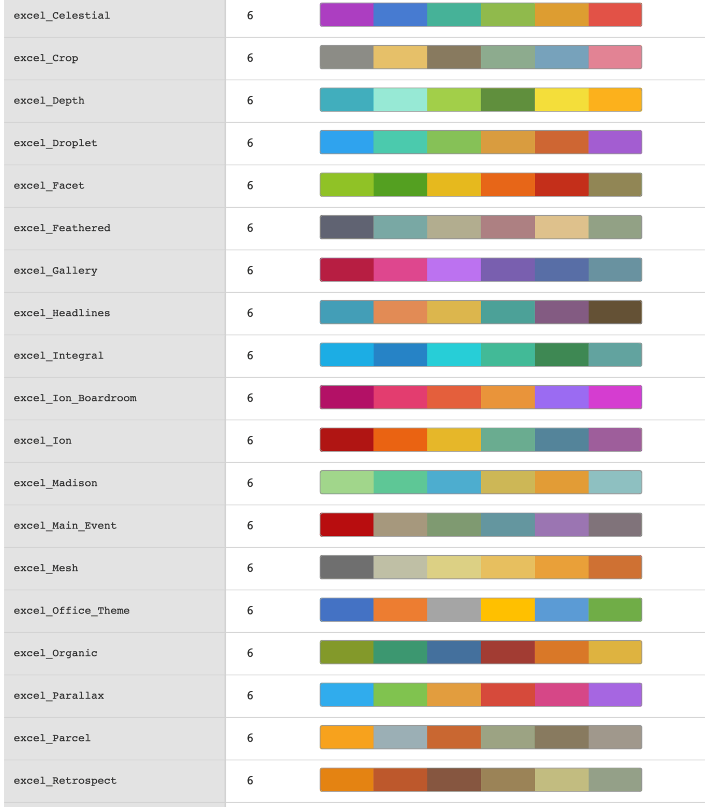

| info_paletteer {gt} | R Documentation |
While the data_color() function allows us to flexibly color data cells in
our gt table, the harder part of this process is discovering and
choosing color palettes that are suitable for the table output. We can make
this process much easier in two ways: (1) by using the paletteer
package, which makes a wide range of palettes from various R packages readily
available, and (2) calling the info_paletteer() function to give us an
information table that serves as a quick reference for all of the discrete
color palettes available in paletteer.
info_paletteer(color_pkgs = NULL)
color_pkgs |
A vector of color packages that determines which sets of
palettes should be displayed in the information table. If this is
|
The palettes displayed are organized by package and by palette name. These
values are required when obtaining a palette (as a vector of hexadecimal
colors), from the the paletteer::paletteer_d() function. Once we are
familiar with the names of the color palette packages (e.g.,
RColorBrewer, ggthemes, wesanderson), we can narrow down
the content of this information table by supplying a vector of such package
names to color_pkgs.
Colors from the following color packages (all supported by paletteer)
are shown by default with info_paletteer():
awtools, 5 palettes
dichromat, 17 palettes
dutchmasters, 6 palettes
ggpomological, 2 palettes
ggsci, 42 palettes
ggthemes, 31 palettes
ghibli, 27 palettes
grDevices, 1 palette
jcolors, 13 palettes
LaCroixColoR, 21 palettes
NineteenEightyR, 12 palettes
nord, 16 palettes
ochRe, 16 palettes
palettetown, 389 palettes
pals, 8 palettes
Polychrome, 7 palettes
quickpalette, 17 palettes
rcartocolor, 34 palettes
RColorBrewer, 35 palettes
Redmonder, 41 palettes
wesanderson, 19 palettes
yarrr, 21 palettes
An object of class gt_tbl.

10-5
Other Information Functions:
info_currencies(),
info_date_style(),
info_google_fonts(),
info_locales(),
info_time_style()
# Get a table of info on just the
# `ggthemes` color palette (easily
# accessible from the paletteer pkg)
tab_1 <-
info_paletteer(
color_pkgs = "ggthemes")